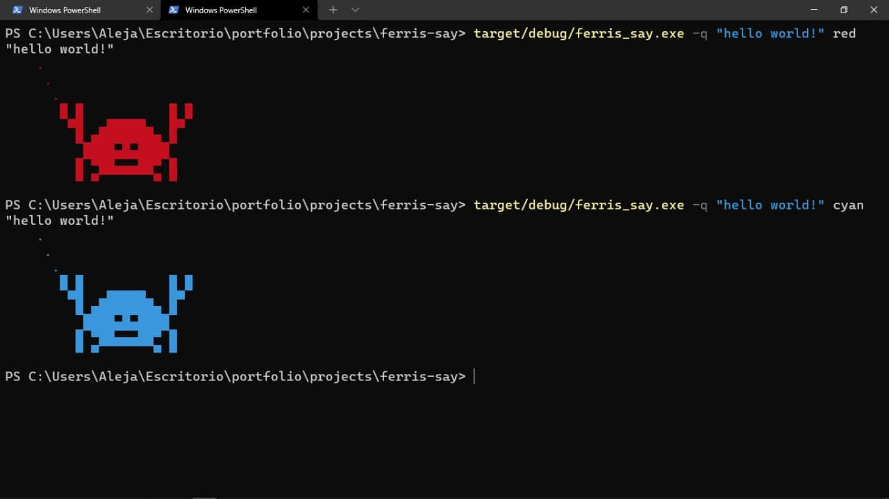

6 minutes
Creating a CLI with Rust
Setup
Before getting into our hacker mood, let’s create a cargo project and install the packages we’ll need:
cargo new ferris-say
Now, open your Cargo.toml, and add this below [dependencies]:
[dependencies]
ansi_term = "0.12.1"
clap = { version = "3.1.6", features = ["derive"] }
Or, if you have cargo edit (which I prefer using), write right in your terminal:
cargo add ansi_term
cargo add clap --features derive
After it’s installed, we’re ready to go to the next step.
Getting input from arguments
The crate clap that we just installed and used in the snippet below, helps us not only to parse but to validate the an input given by the user. Let’s see how to implement and use it into our application.
First thing is to create a function called input here we’ll handle and parse the arguments provided; Our Cli will request only two arguments to work with: quote and color but for color we need an enum as we’ll only allow to use a few types of colors (but a cool ones). Let’s stop talking and start coding:
The function signature
The function signatures let us to know how many parameters will it receive and what will be the output generated, and let’s bring into scope both of the crate we’ll be using along this tutorial:
// Imports
use ansi_term::{self, Colour};
use clap::{ArgEnum, Parser};
fn input() -> (String, Colour)
Parsing the input
#[derive(Parser, Debug)]
#[clap(author, version, about = "cowsay rusty version")]
struct Args {
/// Quote that ferris will say
#[clap(short, long)]
quote: String,
/// Colors to choose
#[clap(arg_enum)]
color: Colors,
}
The Parser trait that our struct derives, parses all the arguments provided by the user and turns it into that struct fields. As you can see, we only have two fields, so it means, we’ll only receive two arguments, as we state before.
Note that quote is the type of String and color is the type of Colors, but it doesn’t exist yet, so let’s create it.
#[derive(Copy, Clone, PartialEq, Eq, PartialOrd, Ord, ArgEnum, Debug)]
enum Colors {
// Not black because it's the background color
Red,
Green,
Yellow,
Blue,
Purple,
Cyan,
White,
}
Focus on that ArgEnum derived trait, that means: “Hey, this enum’s variants are the only few valid types for a argument” and clap will ensure that the argument provided fits into it.
Once we have our Colors enum, let’s handle each variant using the classic match statement.
Handling the input
At this point we already brought into scope our ansi_term crate so it’s time to use it
// Imports
use clap::{ArgEnum, Parser};
use ansi_term::{self, Colour} // -> This one
// fn input(){...}
So we can crate a match statement to filter through the Colors(our enum) variants, return a Colour(ansi_term’s enum) variant and bind it to a variale named color_matched.
First, create a new instance of Args. To access to its field (quote and color) we need to use the dot notation:
// ...
let args = Args::parse();
// to access to the quote:
args.quote
// to access to the color:
args.color // If you want to show through terminal remember using ":?"
Now we are up to handle:
// ...
let color_matched = match args.color {
Colors::Red => Colour::Red,
Colors::Green => Colour::Green,
Colors::Yellow => Colour::Yellow,
Colors::Blue => Colour::Blue,
Colors::Purple => Colour::Purple,
Colors::Cyan => Colour::Cyan,
Colors::White => Colour::White,
};
println!("The user picked the color {:?}", color_matched);
Last thing to do is return the tuple:
//...
(args.quote, color_matched)
Time to test it!
cargo build
target/debug/ferris_say.exe -h
ferris-say 0.1.0
cowsay rusty version
USAGE:
ferris_say.exe --quote <QUOTE> <COLOR>
ARGS:
<COLOR> Colors to choose [possible values: red, green, yellow, blue, purple,
cyan, white]
OPTIONS:
-h, --help Print help information
-q, --quote <QUOTE> Quote that ferris will say
-V, --version Print version information
passing the -h or --help shows the arguments we can use.
Once we know what are the arguments, we’re able to use it correctly.
target/debug/ferris_say.exe -q "Hello world!" red
The user picked the color Red
But…what if I pass a color that isn’t valid?
target/debug/ferris_say.exe -q "hello world!" black
error: "black" isn't a valid value for '<COLOR>'
[possible values: red, green, yellow, blue, purple, cyan, white]
USAGE:
ferris_say.exe --quote <QUOTE> <COLOR>
For more information try --help
We are ready to go to the next step: drawing the ferris.
Draw the ferris
Here, I highly recommend you just to copy and paste the drawing. But first, let’s create another function draw:
The function signature
fn draw(quote: &str, color: &Colour)
Inside the draw function:
// Ferris drawing
const FERRIS: &'static str = r"
.
.
.
█ █ █ █
▀█ ▄█████▄ █▀
▀▄███▀█▀███▄▀
▄▀███▀▀▀███▀▄
█ ▄▀▀▀▀▀▀▀▄ █
";
println!("{}", format!("\"{}\"{}", quote, color.paint(FERRIS)));
A r"" String is called as “raw string”, in short, it tells the compiler to ignore every scape character, It’s easier for us to draw our ferris that way. On the other hand we have a format!macro, we use it as we’ll place the text right above the ferris. It will be better illustrated as we run the program.
Last but not least color is a Colour instance passed by reference, that means we can use the paint that receives a &str params. It “paints” the text to a given color.
Finally inside our main function:
fn main() {
let (q, c) = input();
draw(&q, &c)
}
Final code
We’ll split it into parts to understand how it works.
use ansi_term::{self, Colour}; // 0.12.1
use clap::{ArgEnum, Parser};
fn draw(quote: &str, color: &Colour) {
// Ferris drawing
const FERRIS: &'static str = r"
.
.
.
█ █ █ █
▀█ ▄█████▄ █▀
▀▄███▀█▀███▄▀
▄▀███▀▀▀███▀▄
█ ▄▀▀▀▀▀▀▀▄ █
";
println!("{}", format!("\"{}\"{}", quote, color.paint(FERRIS)));
}
fn input()-> (String, Colour) {
#[derive(Parser, Debug)]
#[clap(author, version, about = "cowsay rusty version")]
struct Args {
/// Quote that ferris will say
#[clap(short, long)]
quote: String,
/// Colors to choose
#[clap(arg_enum)]
color: Colors,
}
#[derive(Copy, Clone, PartialEq, Eq, PartialOrd, Ord, ArgEnum, Debug)]
enum Colors {
// Not black because it's the our background color
Red,
Green,
Yellow,
Blue,
Purple,
Cyan,
White,
}
let args = Args::parse();
// validate colors argument:
let color_matched = match args.color {
Colors::Red => Colour::Red,
Colors::Green => Colour::Green,
Colors::Yellow => Colour::Yellow,
Colors::Blue => Colour::Blue,
Colors::Purple => Colour::Purple,
Colors::Cyan => Colour::Cyan,
Colors::White => Colour::White,
};
(args.quote, color_matched)
}
fn main() {
let (q, c) = input();
draw(&q, &c)
}
Result photos

I hope you guys enjoyed this tutorial, any comment or suggestion my email is opened!